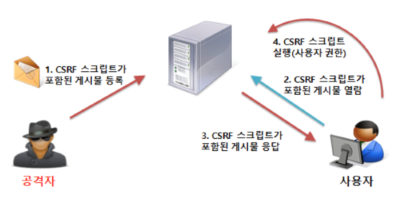
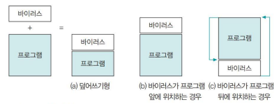

연습문제 정리
해킹: 남의 컴퓨터 시스템에 허락 없이 침입하여 데이터를 빼내거나 파괴하는 일보안의 3대요소:기밀성: 인가된 사용자만 정보자산의 접근무결성: 적절한 권한을 가진 사용자가 인가된 방법으로만 정보 변경가용성: 필요한 시점에 정보 자산에 접근 가능하도록
세션: 사용자와 시스템 사이 또는 두 시스템 사이의 활성화된 접속최초 이메일: 1970snmp: IP 기반 네트워크상의 각 호스트로부터 정기적으로 여러 관리 정보SFP: 함수 호출시 스택 프레임 구조를 유지하기 위해 저장되는 이전 함수 프레임 포인터MAC 주소: 12개 16진
DB 권한 관리
- 뷰를 사용하지 않는경우 접근제한, 모든 권한은 뷰를 생성해서 하도록
- 네트워크 트래픽을 탐지 할 수 있는
태핑장비를 DB 서버 중간에 설치 즉 일종의 하드웨어 방화벽을 설치하는 것- 네트워크 패킷 중 SQL 질의문을 탐지하여 수상한 접근 케치
AAA 요소
시스템 사용자가 로그인한 후 명령을 내리는 과정에 대한 시스템 동작
Authentication (인증):- 아이디, 비번 입력하는 과정
Authorization (인가):- 로그인을 허락된 사용자로 판명하여 로그인 하는 과정 즉, 신원 확인 과정
Accounting:- 로그인 했을 때 시스템에 로그를 남기는 과정
리눅스 시스템 로그
/usr/adm: 초기 유닉스/var/adm: 최근 유닉스/var/log: 리눅스
로그 관리
- 시스템 내부나 네트워크를 통해 외부에서 시스템에 어떤 영향을 미칠 경우 그 내용 을 기록하여 관리하는 것
로그 종류
history: 명령창 로그syslog: 시스템 운영체제 전반의 로그utmp: 유저 로그인 기록
블루투스 취약점
블루프린팅
블루투스 공격장치의 검색 활동을 의미
- 블루투스는 장치의 종류 식별을 위해 SDP 를 보내고 받음
- 공격자는 이 SDP 패킷을 활용하여 공격 가능 장치를 식별
블루스나프
블루투스의 OPP 기능을 이용한 파일 접근 공격
- 장치인증 없이 간편 정보 교환 프로토콜 OPP 기능을 이용해 주소록이나 달력등 민감한 정보를 탈취
블루버그
블루투스 장비 간의 취약한 연결을 이용
- 공격장치와 대상장치를 연결하여 임의의 조작
- 블루투스는 한 번 페어링 하면 그 다음부터는 자동으로 다시 연결되는데 이 점을 이용
IP 계산
- 네트워크 IP, 브로드캐스트 IP를 구하시오 (IP: 192.168.25.10, 서브넷 마스크: 255.255.252.0)
- 192.168.25.10 와 255.255.252.0 를 AND 연산 네트워크 IP=192.168.24.0
- 구한 네트워크 IP 에 네트워크주소로 쓰인 22비트 제와하고 남은 10비트를 모 1로 브로드캐스트IP=192.168.27.255
네트워크 보안
DoS (서비스 거부 공격) & DDoS (분산 서비스 거부 공격)
- DoS는 그냥 혼자하는거고
- DDoS는 여러 사람이 하는 것
공격 유형
취약점 공격형: 오류가 있는 네트워크 패킷을 보낼경우 서비스에 오작동이 발생할 경우 그걸 이용해서 공격하는자원 고갈형 공격:네트워크 대역폭이나 시스템 자원을 소모시키는
DoS 공격 방법
보잉크/봉크/티어드롭 공격:- 프로토콜의 오류 제어 로직을 악용하는 방식
- 반복적인 재요청과 수정을 해서 TCP 쪽에서 오류 처리를 유도하여 시스템을 느리게 만듬
랜드 공격:- 출발지, 목적지 IP 주소를 동일하게 만들어서 패킷을 뺑뺑 돌리게 만든다
죽음의 핑 공격:- ping 에 사용하는
ICMP패킷을 사용하여 더럽게 많이 보내서 마비시키게 만듬 - 그래서 내부적으로 ICMP 포트를 막아주면 해결 가능
- ping 에 사용하는
SYN 플러딩 공격:- 사용자가 많은 것처럼 가상의 사용자를 만들어서 한꺼번에 많이 접속하여
3-way동작을 유도시켜 마비시켜 버리는
- 사용자가 많은 것처럼 가상의 사용자를 만들어서 한꺼번에 많이 접속하여
스머프 공격:ICMP브로드캐스트을 사용하여 네트워크에 존재하는 임의의 시스템을 통해 여러 클라이언트로 확장시켜 공격다이렉트 브로드캐스트:- 외부 네트워크에서 특정 네트워크에 브로드캐스팅 할 수 있는 기능
192.168.0.0 네트워크라면
192.168.0.255로 브로드캐스팅 - 공격자는 시작 IP 주소를 위조하여
192.168.0.255네트워크에ICMPrequest 하여192.168.0.255에 연결된 모든 장치들이 위조된 IP 장치에ICMP응답을 받게 하여 마비 시킨다
- 외부 네트워크에서 특정 네트워크에 브로드캐스팅 할 수 있는 기능
192.168.0.0 네트워크라면
DDoS 공격 방법
공격자: 메인 두목PC마스터: 에이전트를 관리하는- 핸들러 프로그램: 마스터 시스템에 역할
에이전트: 직접공격을 가하는 PC- 데몬 프로그램: 실제 공격을 하는 프로그램
스니핑
네트워크 통신을 하는 시스템들의 데이터를 엿보는
- 보통 공유기나, 스위치는 모든 패킷을 브로드케스팅 한다, 다만 실제 브로드케스팅 요청이 아닌 경우 필터링 과정을 거치기 때문에 다른 클라이언트에 패킷을 받아 볼 수 없는것
- 스니핑은 필터링을 무시하고 모든 패킷을 받아보는
종류
스위치 재밍 공격:- 랜덤으로 MAC 주소 생성해서 스위치에 존나게 보내서 MAC 테이블 저장용량을 초과 시킴
SPAN 포트 공격:- 스위치에 송/수신 되는 데이터를 미러링 함
프러미스큐어스 모드
- 데이터 링크 계층과 네트워크 계층의 필터링을 해제하는 랜 카드의 모드
스니핑 탐지
Ping을 이용한 방법:- 의심가는 Host에 존재하지 않는 MAC 주소로 ping을 보내서 원래는 응답을 못받아야 정상인데 받으면 해당 Host는 스니퍼임
ARP를 이용한 방법:- ARP를 위조하여 없는 MAC 주소로 설정했는데 정상적이라면 아무런 응답이 없어야 하는데 스니퍼 Host는 응답을 보냄으로 탐지가능
DNS를 이용한 스니퍼 탐지:- DNS 응답 과정을 이용한 탐지
ARP watch:- ARP 모니터링 하여 탐지
스푸핑
서버와 클라이언트 통신 과정을 스푸퍼가 처리를 하게 되는
ARP 스푸핑:- 서버와 클라이언트 통신 과정 시 공격자의 MAC 주소로 속여서 요청/응답 을 모두 공격자가 하게 되는
- 2계층 에서 일어남
IP 스푸핑:- 다른사람의 IP 주소를 강탈하여 어떠한 권한을 획득
- 서버가 IP 주소로 권한의 대한 처리가 들어가 있다면
ICMP 리다이렉트: 공격자를 네트워크에 속한 라우터라고 알려 패킷에 흐름을 바꿈
DNS 스푸핑:- 실제 DNS 서버보다 빨리 대상에게 DNS Response 패킷을 보내서 공격대상이 잘못된 ip 주소로 가게 설계
세션 하이재킹
- 두 시스템간 연결이 활성화 된 상태, 즉 로그인된 상태를 가로채는것
- 누군가 네이버에 로그인 한 채로 자리를 비웠을 때 그 자리로 가서 그 사람 계정으로 뭔 짓거리를 하는거 같은것
무선 보안
SSID 브로드캐스팅 금지
- 보통 wifi 창가면 wifi 이름이 보이는데 이걸
SSID 브로드캐스팅이라고 함 - 브로드캐스팅을 해제 하고 수동으로 SSID 를 사용자가 입력 해줘야만 접속 가능하게 설계 하는
암호화 프로토콜
WEP:- 단순한 비밀번호로 요청하여 Wifi 를 연결하는
WPA-PSK:WEP의 복호화가 간단하다는 문제를 해결하기 위해 나온 프로토콜
EAP:- 기업환경을 위한 암호화 방법
- 중앙 암호화 RADIUS DB 서버 하나 두고 둘 사이를 컨트롤
웹 보안
웹 프록시
- 프록시 서버를 하나 생성해놓고
- 프록시 서버가 패킷을 받아서 위변조
구글 고급 검색기능
- site
filetype:<확장자>: 특정 유형 파일에 검색하는 문자가 있는지intitle:<검색어>: 특정 사이트 제목
검색 엔진 우회
User-agent: googlebot
User-agent: *
Disallow: dbconn.ini
Disallow: /admin
주요 취약점
SQL Injection
- 웹에 URL에 SQL 구문을 넣어 DB 접근을 유도함
- 애플리케이션이 사용자로부터 입력받은 데이터를 검증 없이 SQL 쿼리에 직접 포함할 때 발생
인증 및 세션 관리 취약점
- 첫 접속시 자기의 아이디, 비번을 재대로 입력
- 인증 과정 시 나온 세션키를 사용하여 유저 아이디만 다르게 수정하여 다시 접속
- 만약
아이디 && 세션 키조합 인증이 안된경우 아이디만 알면 해당 계정으로 접속하여 사이트를 이용할 수 있게된다는 뜻
XSS
공격자가 서버에 작성한 스크립트가 다른 사람에게 전달되는 것
- 서버에 공격 스크립트(js등) 작성하여 저장
- 이때 서버는 WAS와 같이 SSR인 경우 효과적
- 그러면 사용자는 서버에 접속하는 순간 해당 코드가 실행됨
- 해당 취약점을 방지하기 위해 일부 특수문자에 대한 예외 처리가 필요
Broken Access Control
인증 권한 Level 설정으로 인해 일반 사용자가 관리자 페이지 같은곳에 접근 할 수있는
- 예를들어 웹서버에 파일 탐색권한을 제대로 막지 않았다던가
Security Misconfiguration
디렉터리 리스팅:- 웹 브라우저에서 웹 서버의 특정 디렉터리를 열면 그 디렉터리에 있는 파일과 목록이 모두 나열되는 것을 말함
리버스 텔넷:- 시스템 권한 획득 후 텔넷과 같은 쉘에 명령을 입력 할 수 있는
- 예를들어 서버에 ssh 터널링을 활성화 한 경우 서버에 권한을 획득해서 명령을 수행 할 수 있게되는거
민감한 데이터 노출
- 해킹으로 인해 클라이언트 유저의 민감한 데이터 유출
공격 방어 취약점
- APT 공격이 일반화되면서 보안 솔루션으로 탐지가 어려워 웹 에플리케이션 수준에서 탐지, 로깅 을 권고
CSRF 취약점

- 구조는 XSS 와 비슷
- CSRF는 스크립트 서버에 전송하여 서버가 해당 스크립트를 실행하도록 설계
- 즉 만약 관리자(서버) 가 해당 요청을 받으면 해당 요청을 처리할때 모든 클라이언트에
CSRF스크립트가 실행이 됨 즉, 관리자, 사용자 모두가 피해자가 된 상황
XSS, CSRF 차이점
- XSS 에 경우 사용자 클라이언트에 스크립트를 실행시켜 해당 사용자만 해킹당한다
- CSRF는 스크립트가 서버에서 실행시켜 해당 서비스를 이용하는 모든 클라이언트를 해킹시킨다.
메모리 구조
스택 영역:- 프로그램이 동작하기 위한 인자, 프로세스 상태 저장
- 레지스터의 임시 저장공간
- 가장 윗단 이라 레지스터와 가까움
힙 영역:- 실제 프로그램 실행 시 사용되는 메모리 공간
어셈블리 레지스터 정리
pushl %ebp: 메모리 스택 최상단(자기 기준) 주소값을 가르킴movl %esp,%ebp:esp(스택 최하단)레지스터 값을ebp(스텍최상단)으로 복사call function:function함수 호출subl $12,%esp: 12 바이트의 공간을 할당하기 위해esp값을 12로 줄임addl %eax,8(%ebp):eax값에*(ebp+8)값을 더함cx: 반복적으로 실행되는 특정 명령에 사용
시스템 공격
SetUID:- 유닉스 권한이
rwsr-xr-x인 경우 누군가 해당 파일을 실행해도 파일 소유자 권한을 가짐
- 유닉스 권한이
버퍼 오버플로 공격
strcpy()함수같이 명시한 버퍼 크기를 초과하여 값을 입력하는 경우 해당 버퍼 공간 이상으로 메모리를 침범하여 문제가됨
strcpy()에 10바이트 공간을 할당했는데 만일 이를 무시하고 15바이트 데이터를 보낸다 하더라도 해당 넘치는 5바이트에도 문제없이 값이 대체되게 된다- 즉 일종의 메모리 변조가 가능한 셈이다
- 만일 10바이트 할당한 공간 이후에 오는 1바이트 공간이 사용자 로그인을 허용하는 값이라고 치자
- 그럼 해커 입장에서는 마지막 11바이트 공간에
1값을 할당시켜서 손쉽게 로그인을 할 수있게 되는 거다 - 그러므로 안전하게
strcpy_s를 쓰도록하자
포멧 스트링 공격
printf()함수를 사용할때%d와 같은 서식 문자를 입력할때 취약점
- 사용자가 문자열을 입력하고 그걸
printf()로 출력하는 상황일 경우 이전입력 문자 개수를 더해 참조하는 메모리 주소에 쓰는 서식문자인%x가 있다- 그렇다면 사용자가
aaa%x라고 입력하면 어떤일이 발생하겠는가?
- 그렇다면 사용자가
취약한 서식 문자:%n: int(쓰인 바이트 수, 문자면 문자 길이)
악성코드
바이러스
숙주가 되는 파일을 감염시켜 퍼지는 악성코드 다른 파일이나 프로그램에 자신을 삽입
부팅 바이러스: 부팅시 MBR 정보를 메모리에 저장할때 사용되는 모든 프로그램 감염- 부팅순서: POST → CMOS → MBR or 윈도우 부트매니저
파일 바이러스

1세대: 바이러스가 프로그램 뒤에 위치함- 대표적으로 예루살렘, 선데이 등
2세대: 암호형 바이러스- 하드에 있을때는 암호와 되어있는데 메모리에 올라오면서 암호가 풀림
- 백신은 그럼 메모리를 스캔 때려서 바이러스 분석
- 대표적으로 슬로 등
3세대: 은폐형 바이러스- 감염된 파일이 일정기간 잠복기간 가지도록 설계
- 대표적으로 브레인, 조시 등
4세대: 다형성 바이러스- 코드를 다양하게 조합하여 암호형 바이러스와 덧붙여 백신이 식별을 어렵게함
5세대: 매크로 바이러스- MS 오피스 같은 사무용 프로그램에 매크로 기능으로 감염시킴
차세대:- 네트워크와 이메일로 전파
- 파일감염을 넘어 정보탈취와 백도어 기능
웜
스스로 복제하여 네트워크를 통해 전파되는 악성코드 스스로 증식하는 것이 목적이라 파일이나 운영체제 자체에 이런 기능이 있거나 운영체제를 감염 시킴
메스 메일러:- 자기를 포함하여 대량으로 메일 전송
- 사용자가 읽었을때 감염
시스템 공격형:- 운영체제 취약점을 이용하여 내부정보 파괴하거나 사용할 수 없게 만듬
네트워크 공격형:- SYN 플러딩 DOS 공격을 수행하는
트로이 목마
악성 루틴이 숨어있는 프로그램 (백도어)
- 겉으로는 멀정해 보이나 사용자가 실행하면 악성코드 실행
백도어: 제품 출시 시 삭제해야 하지만 제품 출시 할때까지 남아있는 경우가 있음
PUP (Potentially Unwanted Program)
사용자에게 동의를 구하지만 용도를 파악하기 어려운 프로그램을 설치하는 경우
- 프로그램 설치 시 더미로 설치하려는 프로그램들을 의미함